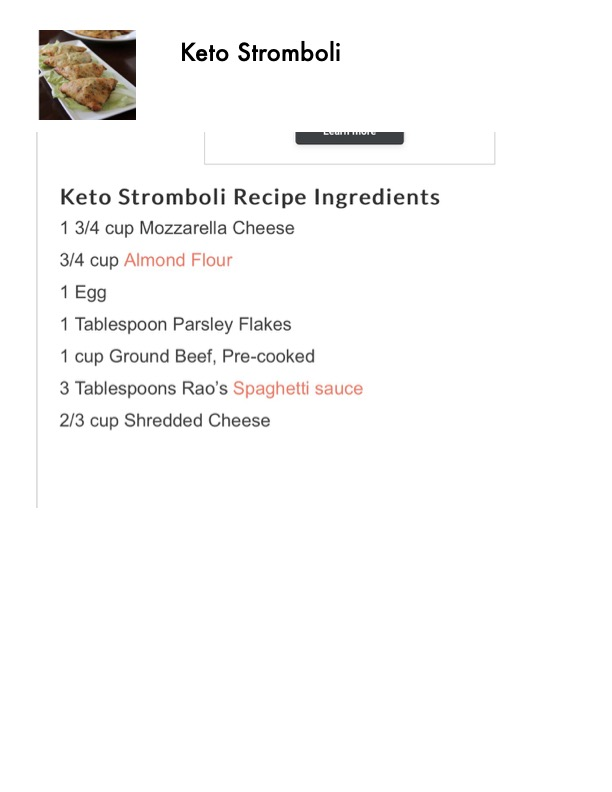

Keto Stromboli

Original cookbook page 233
A keto-friendly stromboli using fathead dough (mozzarella cheese and almond flour base) filled with ground beef and cheese.
Prep: 20 minutes • Cook: 15-20 minutes • Total: 40 minutes
Ingredients
- 1 3/4 cup Mozzarella Cheese
- 3/4 cup Almond Flour
- 1 Egg
- 1 Tablespoon Parsley Flakes
- 1 cup Ground Beef, Pre-cooked
- 3 Tablespoons Rao's Spaghetti Sauce
- 2/3 cup Shredded Cheese
Instructions
- Combine the Mozzarella Cheese and the parsley seasoning in a bowl. Heat the cheese until it's melted. This can be done in the microwave for about 1 minute or on the stove top using a double boiler.
- Add the Almond Flour and Egg to the melted cheese mixture. Put the dough onto a nonstick baking sheet (or parchment paper) and knead the dough until it combines and comes together.
- After the dough has come together, place a sheet of parchment paper on top of the dough and use a rolling pin to flatten the dough.
- In a separate bowl combine the precooked ground beef, Rao's sauce, and shredded cheese together.
- Cut the dough into squares as shown in the process photos. Place about a tablespoon full of the beef filling into each square. Fold the dough to make a triangle and press the edges together until they stick.
- Place each Stromboli triangle on a baking sheet with a nonstick baking mat or parchment paper (if not they will stick).
- Bake at 350 degrees for about 15 to 20 minutes until they are golden brown.
📝 Recipe Notes
Uses fathead dough (popular keto dough made from mozzarella and almond flour). Make sure to precook the ground beef. Recipe spans pages 233-234.
Recipe #233 from collection